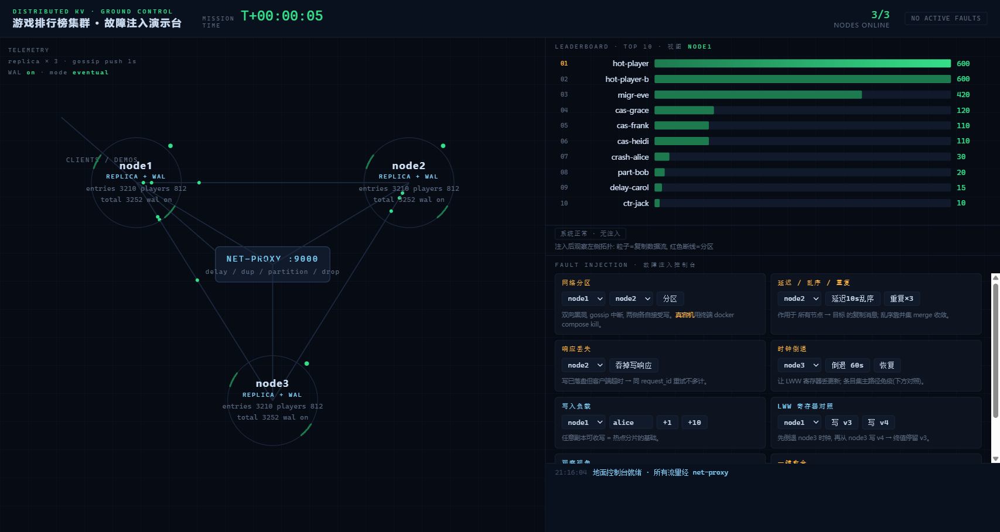

高写入场景下的最终一致性分布式 KV —— 三副本 · 异步复制 · 热点分片
每次杀怪 / 捡金币都是加分
QPS 高出订单类业务
一到两个数量级
榜单晚几秒更新,无投诉
业务授予的宽容额度
= 设计空间
头部主播单 key
可占 50% 以上请求
一个 key 打穿单节点
既要吞下高写入和热点,又被允许短暂不一致 —— 这张"优惠券"怎么花,就是我们的设计。
磁盘与网络带宽
有物理上限
热点 key 单点排队
单点故障
= 全服榜单消失
宕机是常态不是意外
但数据一旦分布
三条物理定律立即生效 ↓
分区时少数派拒绝写入
银行余额的正确选择
排行榜用它是浪费:
分区期间全服不能加分
分区时两侧都继续写
代价:暂时不一致
业务已授权"可短暂读旧值"
换来:写入永不拒绝
分区愈合后,有限时间内
三副本自动收敛
"最终"一致
—— 九个演示唯一要证明的事
类比:不存文件,存 Git 提交历史 —— 历史只追加,永不冲突
| 故障 topic | 攻击点 | 为什么无害 |
|---|---|---|
| 副本宕机 | 丢副本 | WAL 重放 + gossip 反熵自动补课 |
| 分区 + 重复×3 | 复制协议 | 并集幂等,重复与顺序都算不错 |
| 延迟 10s 乱序 | 复制协议 | 交换律:先到后到结果一样 |
| 重启丢内存 | 持久化 | 条目先追加 WAL 再确认 |
| 迁移一半宕机 | 扩容 | 条目不可变 → 迁移幂等可重入 |
| 热点 key 50% | 吞吐 | 任意副本可写,并行度 = 3 |
| 并发 CAS | 线性性 | local 双成功(已知违反) / quorum 恰一成功 |
| 时钟倒退 | 定序 | 主路径合并不读时间戳 |
| 响应丢失 | 确认语义 | request_id 幂等重试,不双计 |
学术名字:CRDT(grow-only set 变体) · 收敛条件:幂等 + 交换 + 结合 —— 数学保证,不是测试运气
先说清楚
预期行为
点按钮
docker kill
指着屏幕
看实际结果
违反了哪项保证
或为何仍正确
第四步是全场重点:违反了什么,为什么敢违反,什么时候不能违反 —— 每个故障都交代清楚。
| # | 故障 | 方式 | 看点 |
|---|---|---|---|
| 1 | 副本宕机 | 终端 kill | 恢复后 gossip 自动补齐,无人工 |
| 2 | 分区 + 重复×3 | UI | 愈合后 = 两侧之和,重复不多计 |
| 3 | 延迟 10s 乱序 | UI | 旧值窗口可见,终值与顺序无关 |
| 4 | 重启丢内存 | 终端 + 断言 | WAL 开 = 完整 / 关 = 丢,边界清晰 |
| 5 | 迁移一半宕机 | 终端 + 断言 | 老集群零影响,迁移幂等重入 |
| 6 | 热点 key 50% | 终端压测 | 写散三副本,延迟差 3.0x |
| 7 | 并发 CAS | 终端 + 断言 | local 双成功(违线) / quorum 恰一 |
| 8 | 时钟倒退 | UI | LWW 丢更新反例,主路径免疫 |
| 9 | 响应丢失 | UI | 同 request_id 重试,不双计 |
预测:剪断 node1—node2,两侧各写 10 分;
愈合后三副本自动等于 20,消息重复×3 不多算
条目按 request_id 并集,同一条目投多少次都只算一次
最终一致 = 愈合后收敛,不是随时一致
| 场景 | 模式 | 结果 | 含义 |
|---|---|---|---|
| 健康,都发 primary | local | 恰 1 成功 → 110 | 单点串行 = 看起来线性 |
| 分区,两侧各发 | local | 双成功 → 120 ≠ 110 | 违反线性一致 —— 主动展示 |
| 分区,两侧各发 | quorum W=2 | 恰 1 成功 → 110 | 线性回归,少数侧不可用 |
场景 2 不是 bug,是 AP 系统的明码标价:分区拿走线性性,换来两侧继续可写。
场景 3 证明想要回来随时可以 —— 用 quorum 的可用性换。这就是 CAP:我们不躲它,我们交易它。

每个数字都能从鸽笼推出来,不是调参。
分区两侧的两个 CAS 互不 happens-before —— 没有消息路径互相看见 = 并发;判定工具:版本向量
| 面对并发写 | 做法 | 代价 / 我们的态度 |
|---|---|---|
| 报错 | Paxos / Raft 拒绝一个 | 分区期间少数侧不可写 —— 对加分太奢侈 |
| 仲裁 | LWW 时间戳大者胜 | 丢更新,且时钟不可靠(演示 8 反例) |
| 都要 | CRDT 并集 ← 我们 | 并发加分本来就应都保留,语义天然正确 |
数据结构选型 = 提前给"并发怎么办"写好答案。CAS 是读改写,并发下无安全合并 —— 所以它才需要 quorum 或认命。
对策:主路径零时钟依赖 · 因果交给逻辑时钟 · 物理钟只给人看日志
| 局限 | 改进方向 |
|---|---|
| gossip 全量推送 | Merkle 差异检测 |
| 无读修复 | 读时补新 |
| 存储 ×3 冗余 | 冷热分层 |
| CAS 简化两阶段 | 生产换 Raft |
| 节点间无认证 | request_id 签名 |
前两项只影响收敛速度,不影响正确性 —— "最终"本来就是时间参数。
弄不坏的排行榜 —— 条目集 CRDT · 异步复制 · 热点分片